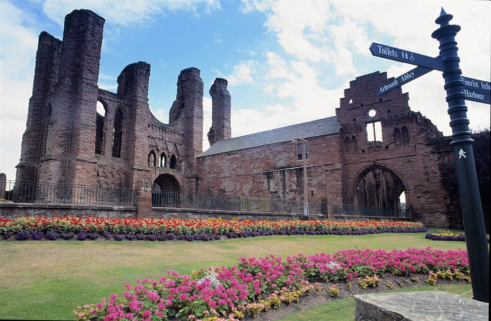
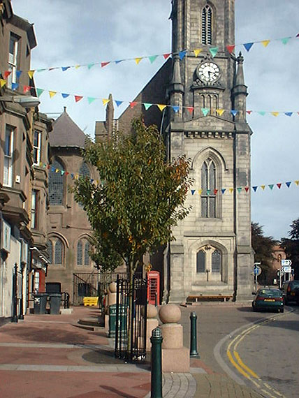
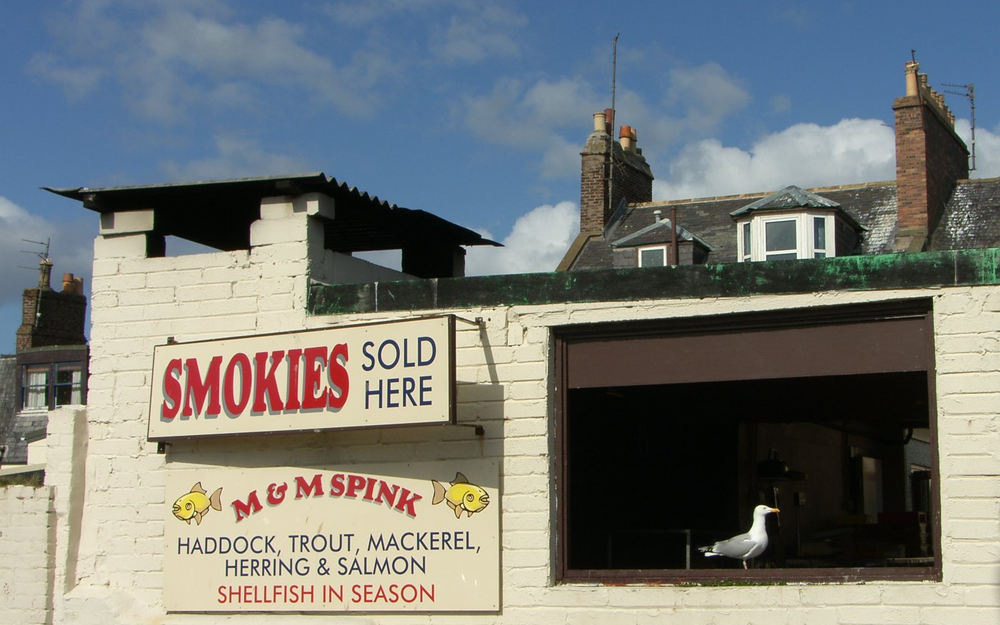
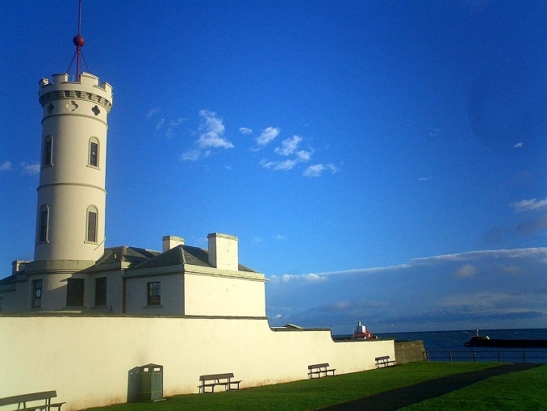
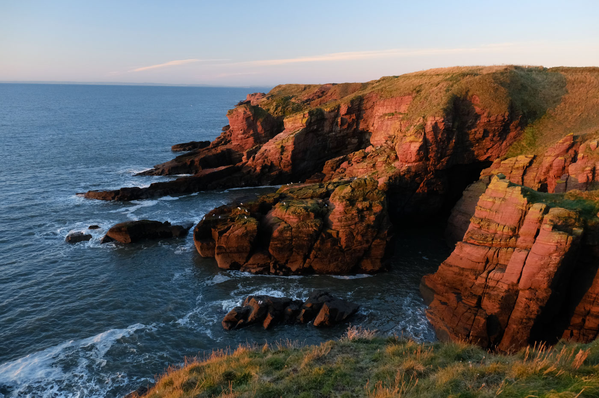
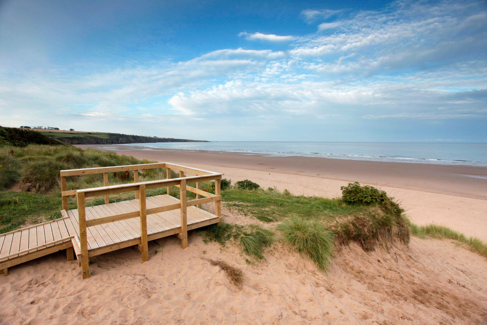

There are plenty of places to visit in this town ranging from visiting the abbey to taking a walk and look around at the cliffs
Arbroath Abbey is one of the town’s most important historic landmarks.
The medieval abbey dates back to the 12th century and is closely connected with the signing of the Declaration of Arbroath.
Today visitors can explore the ruins and learn about its history.
More information about this can be found out on the history page.

An image of the Signal Tower Museum
The High Street in Arbroath is the main shopping area of the town. Visitors can find a range of local shops and businesses along the street. It is a key part of the town where people often come to shop, eat and look around the centre of Arbroath

An image of the Signal Tower Museum
Smokies are the town’s most famous food. Visitors can try this traditional smoked haddock at local fishmongers and restaurants around the harbour. Smokies are prepared using a traditional smoking method and are well known across Scotland.

An image of the Signal Tower Museum
The Signal Tower Museum tells the story of Arbroath’s maritime history. The museum includes exhibitions about the town’s fishing industry, the famous smokies and the nearby Bell Rock Lighthouse. It is located close to the harbour and is a popular place for visitors to learn about the town’s past

An image of the Signal Tower Museum
The cliffs near Arbroath offer dramatic coastal scenery and walking routes along the North Sea. Visitors can enjoy views of the coastline, rock formations and wildlife while walking along the cliff paths. These cliffs are one of the most scenic natural attractions in the area.

An image of the Signal Tower Museum
Lunan Bay is a large sandy beach located just north of Arbroath. It is known for its wide shoreline, sand dunes, natural scenery and views across the North Sea. The beach is popular for walking, photography and enjoying the coastal landscape

An image of the Signal Tower Museum